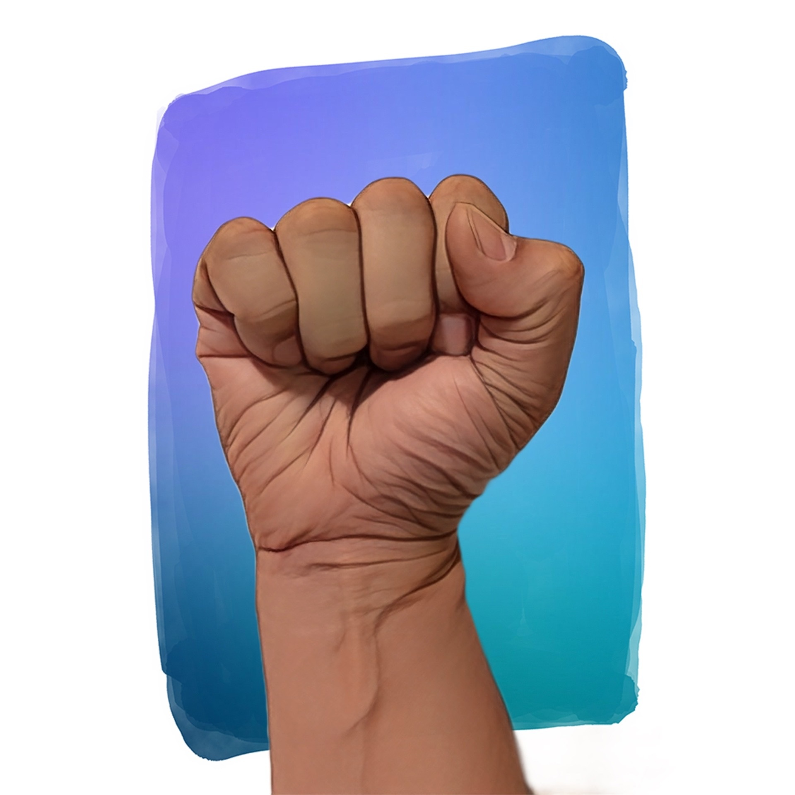
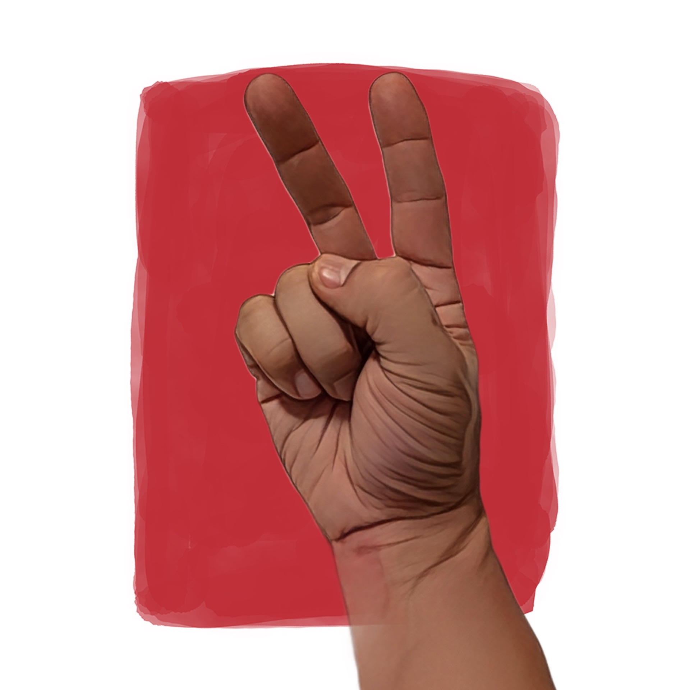
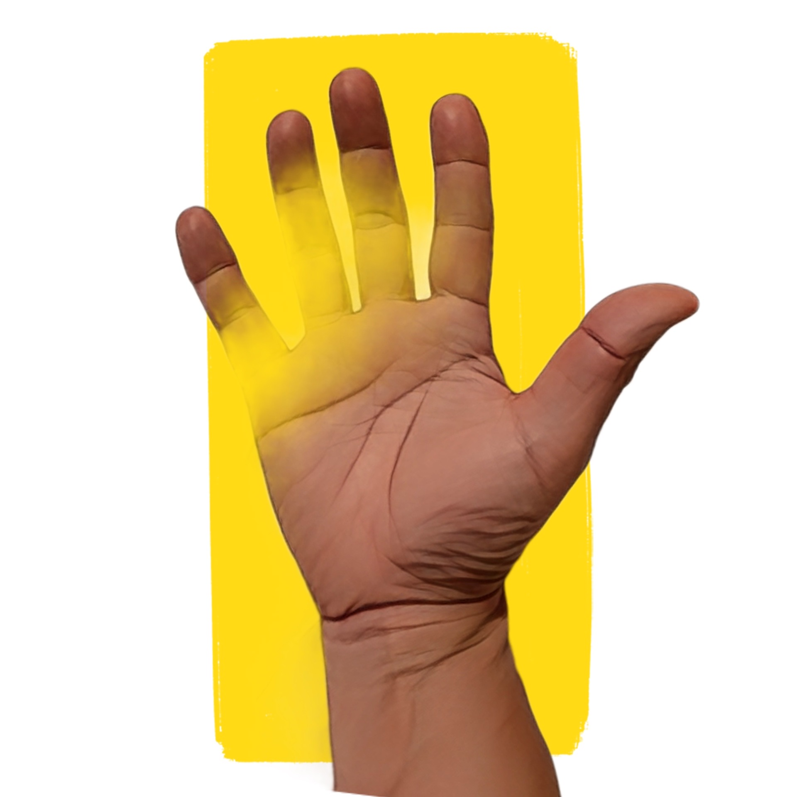

satellite521 v1.1
5-2-1点制。
モード
：
双六=30点先取
／
綱引き=10点差
。AI戦略は
手動/1⁄3/ナッシュ均衡
から選択。
スコアと進行
モード
双六（30点）
綱引き（10点差）
リセット
直近結果:
—
あなた
0
/
30
A I
0
/
30
差(diff)=
0
（あなた−AI）／ 勝利条件: |diff| ≥ 10
あなた:
0
点
AI:
0
点
あなたの手



ログ（最新→古い）
—
AI手の分布 操作盤
AI戦略
手動（スライダ）
ランダム（1/3）
ナッシュ均衡（R=2/17, S=10/17, P=5/17）
R(グー)
0.33
S(チョキ)
0.33
P(パー)
0.34
※「手動」以外を選ぶとスライダは無効化され、値は自動表示になります。